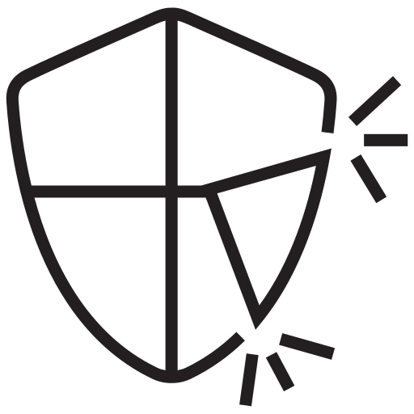

Introducción al Sistema de Arranque
Mucho antes de que el sistema operativo se muestre en la pantalla, el ordenador intenta realizar una serie de pasos muy importantes que permiten que todo funcione correctamente. Estos son los componentes fundamentales del proceso:
-

Memoria ROM
Contiene las instrucciones iniciales que permiten que el ordenador se inicie y comience el arranque
-

BIOS
Supervisa el hardware, hace pruebas e identifica desde qué dispositivo se cargará el sistema operativo
-

MBR / EFI
Gestionan la carga del sistema operativo, y asegura que pase correctamente al software.